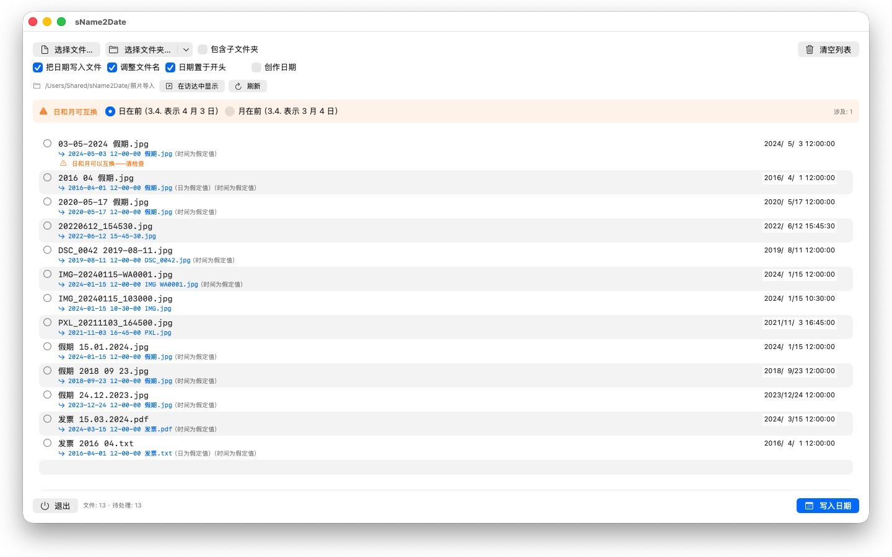
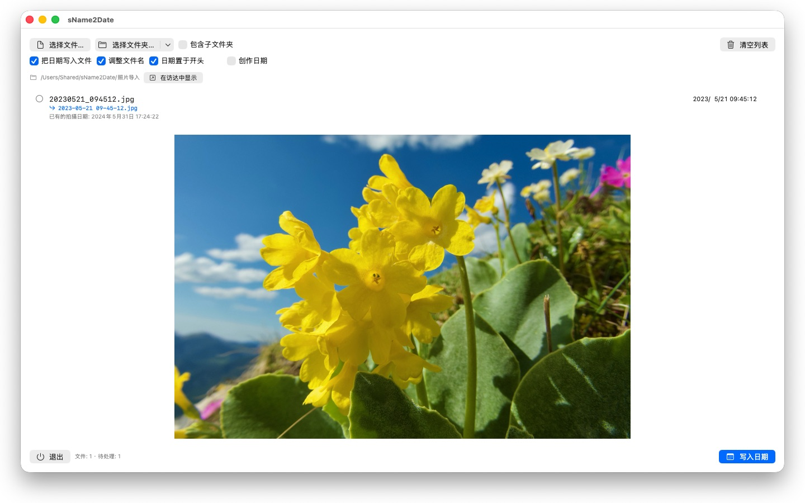

没有拍摄日期的照片，在哪儿都排不进去。sName2Date 从文件名里取出日期，写到每个照片管理软件都会去找的地方。


很多照片和影片的日期就写在文件名里——却不在程序查找它的地方。从聊天软件、扫描仪或旧存档接手的图片，文件名常是 IMG_20240115_103000.jpg 或 假期 15.01.2024.jpg，在任何照片管理软件里都显示为今天的日期。
sName2Date 从文件名中读出日期，并把它作为拍摄日期写入文件。文件中还没有拍摄日期时，就新建一个。
可识别的写法
常见的日期和时间写法，其中包括：
- 2024-01-15 10-30-00
- IMG_20240115_103000
- IMG-20240115-WA0001
- 2024-01-15 · 2024 01 15 · 2024_01_15
- 15.01.2024 · 15-01-2024 · 15.01.24
- 15 Jan. 2024 · January 15 2024
- 2016 04 · 04-2016 —— 只有年和月
写成文字的月份名称，App 会按你的系统语言和英文来读，长写法和缩写都认得。中文里的月份写作 1月，不是由字母组成的词，无法作为月份名称识别——中文文件名请用上面的数字写法。
名称里只有日期时，会假定一个时间，几点由你决定。连日也缺少时，取当月的第一天——这一点会写在该行上。名称里有多个日期时，第一个为准。日和月可以互换的地方，由你的设置决定——受影响的文件会专门标出来，而不是悄悄猜。
名称里根本没有日期时，可以在该行右侧自己填。可填的范围一直回溯到 1826 年，也就是现存最早照片的年份——19 世纪扫描进来的照片，和昨天拍的一样可以标注日期。
会改动什么
写入的是 EXIF DateTimeOriginal 和 DateTimeDigitized 以及 TIFF DateTime，影片和录音则是容器里的创建日期。需要的话，也一并设置文件本身的创建日期和修改日期。
图像数据原封不动：JPEG 不会重新压缩，影片不会重新编码。对影片和录音，App 通常只改动容器里的几个字节，而不是整个重写——再大的影片也是一瞬间就好。
能容纳拍摄日期的格式有 JPEG、PNG、TIFF、HEIC 和 GIF，影片格式 MP4、MOV 和 M4V，以及音频格式 M4A 和 M4B。
无法容纳拍摄日期的文件也能处理
PDF、文本文件、表格根本没有放拍摄日期的字段——但它们照样会进入列表。sName2Date 在这些文件上设置文件本身的创建日期和修改日期，那是这个日期唯一能落到的地方；该行会用橙色对勾而不是绿色对勾来表示。所以这里不看扩展名——PDF、文本、表格、压缩包，全都行。
如果压根不想让文件被碰到，就把窗口上方的「把日期写入文件」勾去掉。这时 sName2Date 只把名称改成 ISO 写法：发票 15.03.2024.pdf 变成 2024-03-15 12-00-00 发票.pdf。在 Finder 里，文件夹就按日期排好了。需要的话，日期也可以留在名称中原来的位置，而不是移到最前面。
一切都可以撤销
一次操作可以用 Cmd+Z 完整撤销——拍摄日期、文件时间戳，以及改过的文件名。Cmd+Shift+Z 再做一遍。
整个文件夹
sName2Date 一次接收整棵目录树，并且能跳过已有拍摄日期的文件。授权过的文件夹会被记住，不会再问第二次。
sName2Date Lite · 免费 — 每次处理一个文件的版本：把文件名中的日期作为拍摄日期写入照片、视频或录音，手动设置日期，把名称改为 ISO 格式，并可用 ⌘Z 撤销全部操作——功能与 sName2Date 相同，只是不能处理整个文件夹。
- 需要 macOS 12 或更高版本
- 支持 24 种语言
- 技术支持： SwiftAppsBavaria@gmx.net
更多 App
sCollectPlay
媒体库的播放器：播放直接来自文件夹、来自 iTunes XML 或 sCollect 媒体库的音乐、电影、有声书和播客——文件的标签不会有任何改动。支持播放列表、音轨和字幕轨道，播放电影时可慢动作播放和逐帧步进。macOS 本身无法播放的格式，例如 MKV、AVI 或 DSD，会交给外部播放器。
sCollectPlay Lite
sCollectPlay 的精简版：直接打开文件夹、iTunes XML 或 sCollect 媒体库，播放其中的音乐、电影、有声书和播客——支持播放列表、音轨和字幕轨道、慢动作播放和逐帧步进。每次会话只能使用一个来源；分栏浏览器、自定义播放列表和最近使用的来源仅限完整版。
sBikeBridge
分析骑行记录，无需上传到任何平台：读取任何以此格式记录的码表所生成的 FIT 文件，以及 GPX 和 TCX。骑行记录保存在 Mac 上的独立资料库中——包含地图、功率和心率、照片和备注；导入时会识别重复项。按年或按月的统计数据，以及按距离、爬升高度和时长的筛选，让骑行记录便于比较。地图也可按需离线使用。